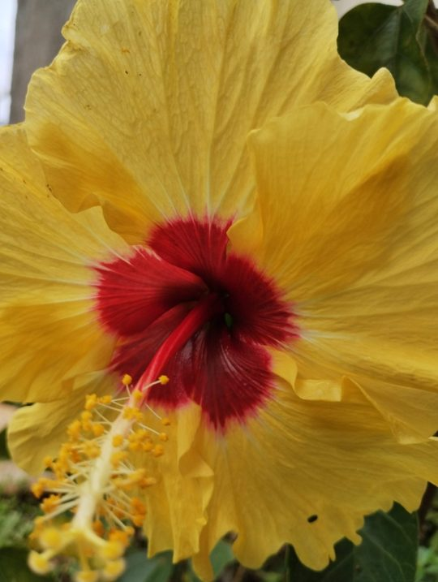

⇄
Referência 2D
Reconstrução 3D
Hibiscus rosa-sinensis 3D
Gerando geometria botânica e texturas PBR...
Hibiscus rosa-sinensis
Reconstrução 3D PBR • Botânica Macro
Enquadramento
Comparar
Áudio
?
Qualidade Gráfica
Auto (Alto)
Auto
Baixo
Médio
Alto
Ultra
Iluminação Natural
Original
Sol Dourado
Macro Estúdio
Exposição
1.08
Física & Ambiente
Brisa Orgânica
45%
Volume Ambiente
35%
Partículas de Pólen
Rotação Contemplativa
Telemetria em Tempo Real
--
FPS
--
Draw Calls
--
Triângulos
Foto Original
Macro Estames
Garganta Carmesim
Perfil 3D
Cálice (Inferido)
Soprar Brisa
Mostrar Interface
Controles & Exploração 3D
✕
Orbitar 360°:
Arraste com botão esquerdo (ou 1 dedo no celular).
Zoom Macro:
Roda do mouse (ou pinça com 2 dedos).
Deslocar (Pan):
Botão direito ou Shift + arrastar (ou 2 dedos).
Tocar / Inspecionar:
Clique ou toque em pétalas, estames, garganta ou folhas para interagir fisicamente e ver a anatomia botânica.
Atalhos:
R
restaura o enquadramento original,
C
ativa comparação 2D/3D,
H
modo contemplação,
Espaço
sopra brisa,
M
áudio,
F
tela cheia.
Abrir a versão anterior
Regiões Inferidas:
Cálice verde, epicálice, pedúnculo lenhoso e folhagem posterior foram reconstruídos por inferência botânica para continuidade espacial 360°.